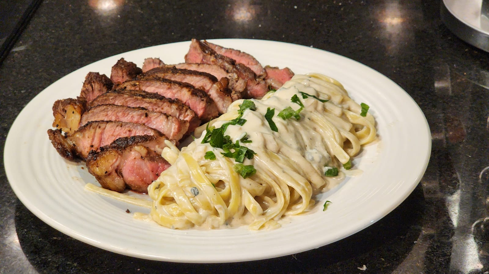
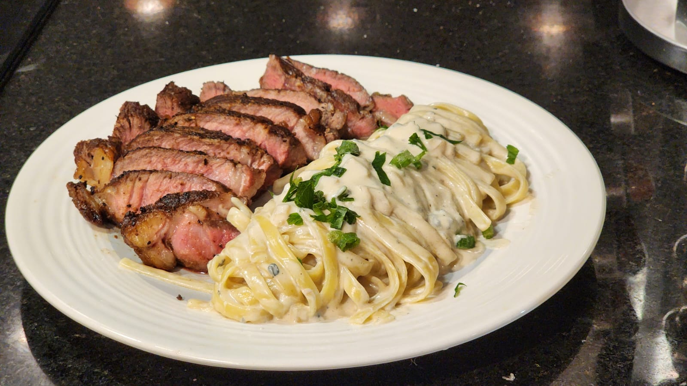
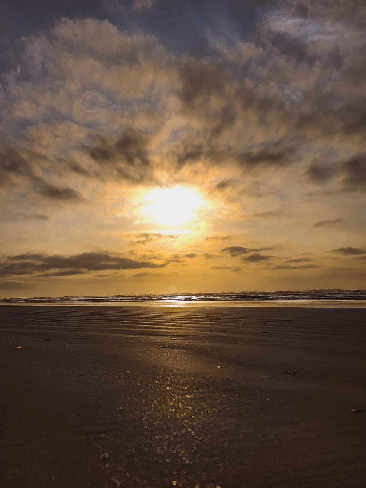
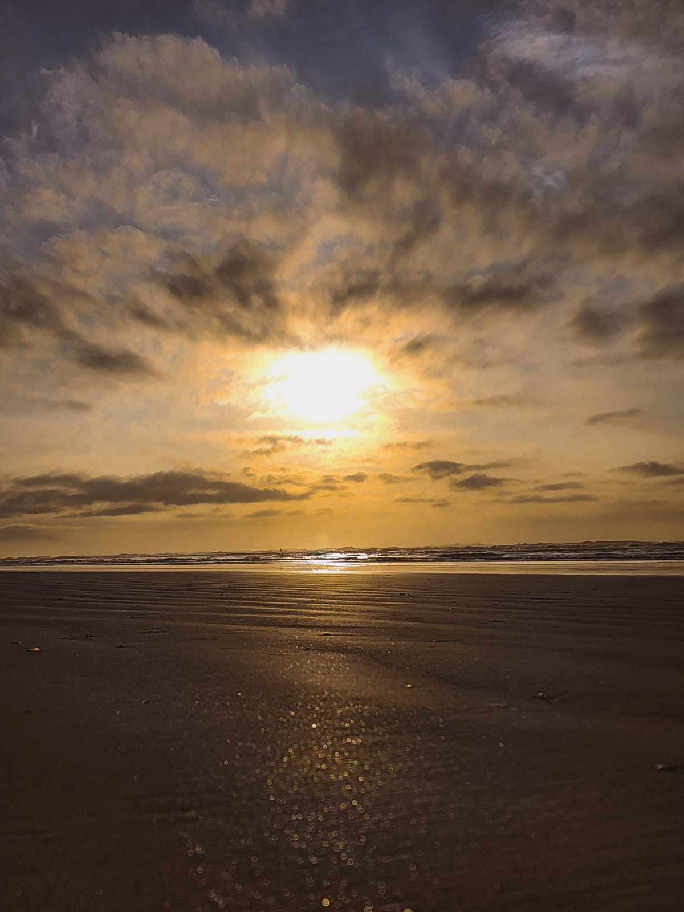
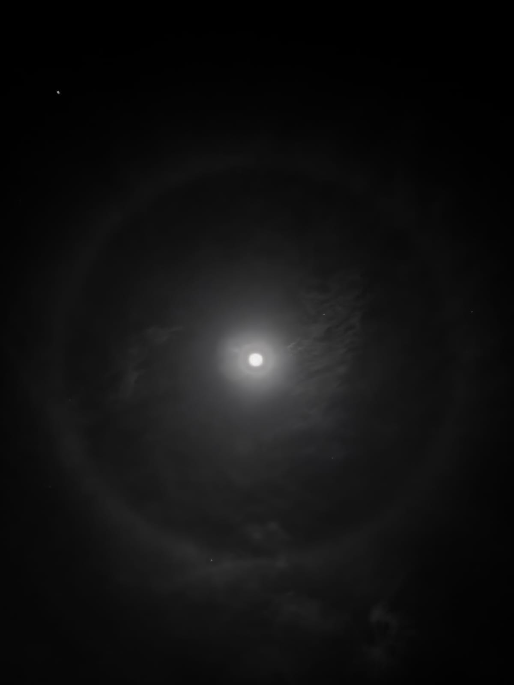
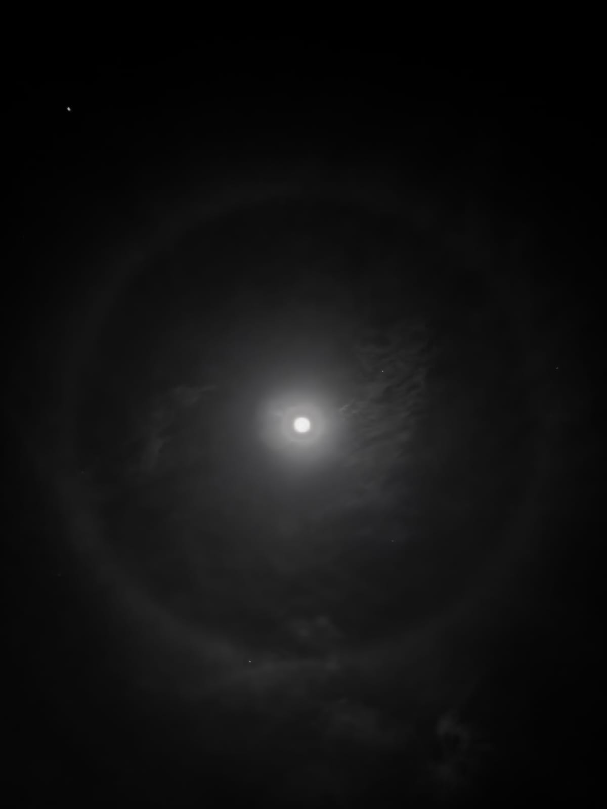

Culinária 🍳
Eu descobri meu gosto pela culinário pelo churrasco, nos quais sempre me oferecia para comandar a churrasqueira. Com o tempo fui aprendendo mexer no fogão para fritar um ovo e, apartir daí, não houve limites para minha curiosidade. Hoje eu tenho como principais receitas as que envolvem carne, massas e panificação.
A seguir, pode-se ver 2 receitas feitos por mim, sendo elas, respectivamente, uma focaccia e a outra um Prime Rib acompanhado de talharim ao molho de gorgonzola.
 

Jogos 🎮
Quando pequeno, via meu pai jogando em um Playstation 3 e, quando peguri no controle pela primeira vez para jogar Call of Duty e God of War, foi um caminho sem volta. Desde então fui apaixonado por jogos eletrônicos, principalmente de console.
Meus tipos favoritos de games são de FPS e de história com exploração em mundo aberto.

Fotografia 📸
Sendo este um dos meus hobbies mais recentes, eu aprendi sobre como tirar boas fotos e também editá-las. Gosto muito de tirar fotos de paisagens, pratos de comida e de outras pessoas quando solicitado, embora não goste de tirar fotos de mim mesmo.
A seguir são apresentadas algumas das minhas fotografias preferidas capturadas e editadas por mim.
 

 
